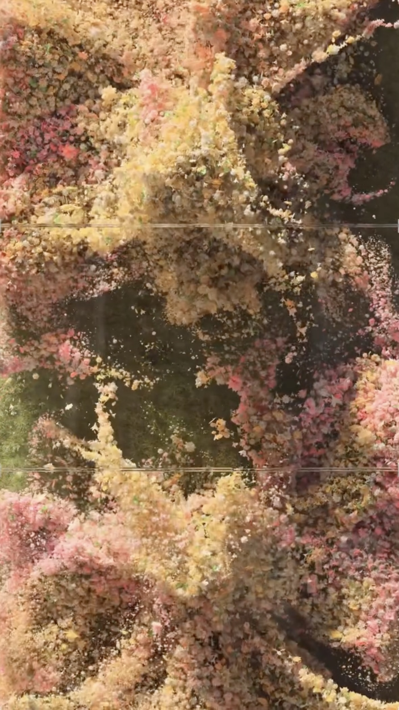
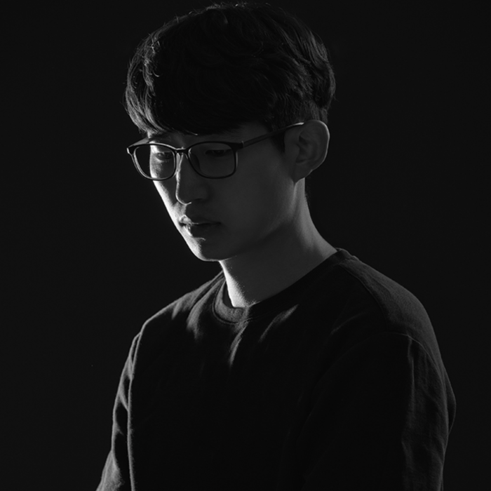

장유환
Media Art
Created with Touchdesigner
2025
봄의 풍경을 매개로, 자연 속에서 드러나는 유사성과 개별성의 미묘한 관계를 섬세하게 탐구한다.
영상 속에서 수많은 파티클들이 모여 하나의 커다란 흐름을 만들어내는 모습은,
마치 바람에 일렁이는 풀잎, 혹은 물결치는 꽃밭처럼 유기적이면서도 질서정연하다.
그러나 그 안을 들여다보면, 각 파티클은 서로 다른 색감과 형태, 움직임을 지닌 채
독립적인 존재로 살아 숨 쉬며, 자신만의 개성을 뚜렷이 발산한다.
이처럼 하나로 어우러진 전체의 조화 속에서도, 각기 다른 존재들이 지닌 고유성은 분명하게 드러나며,
자연이 가진 다채로운 스펙트럼과 그 안의 생명력을 시각적으로 체험하게 한다.
이 작품은 관람자에게 자연의 이중적인 본질에 대한 사유를 제안한다.
즉, 겉으로는 통일되고 조화롭게 보이는 전체 속에서도,
각 개체들이 지닌 고유한 차이와 흔들림, 불완전함은 분명히 존재하며,
이는 우리가 이해하고 받아들이는 세계의 복잡성과 다층적인 성격을 은유적으로 드러낸다.
반복적으로 이어지는 형상들과 움직임은 마치 하나의 패턴처럼 느껴지지만,
그 안에는 미세한 차이, 리듬의 편차, 색채의 변화가 스며들어 있어
완전히 동일한 것은 단 하나도 없음을 상기시킨다.
이러한 미묘한 차이들은 자연이 가진 고유한 이야기이자 시간의 흔적이며,
우리가 익숙하다고 생각했던 장면들 속에서조차 새로운 의미를 끌어내게 만든다.
작품은 보는 이로 하여금, 통일성과 개별성이 공존하는 세계를 감각적으로 경험하게 하며
‘차이 속의 조화’, 그리고 ‘조화 속의 차이’라는 자연의 역설적인 아름다움을 비로소 인식하게 한다.
